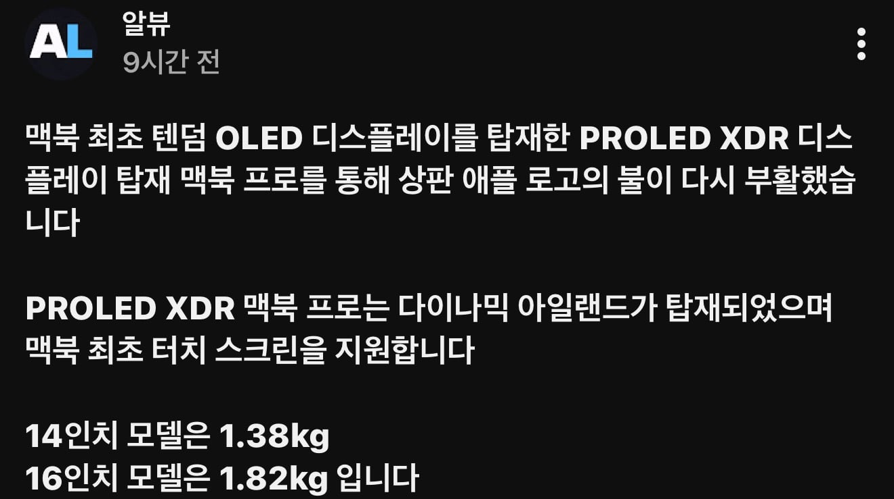
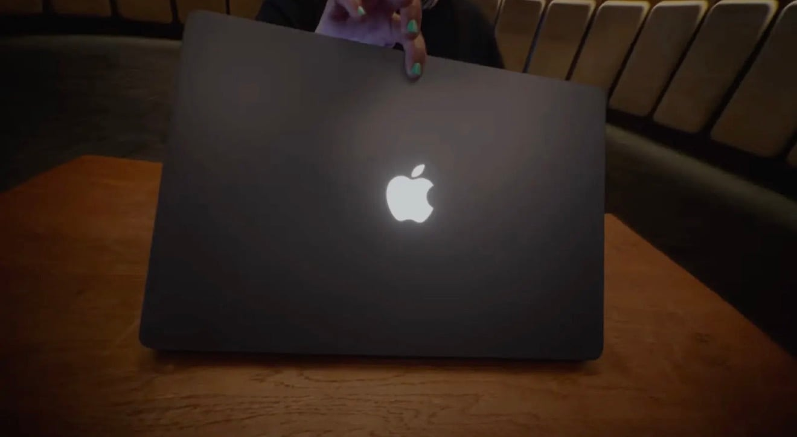
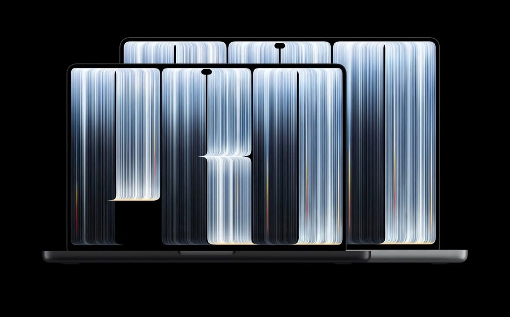
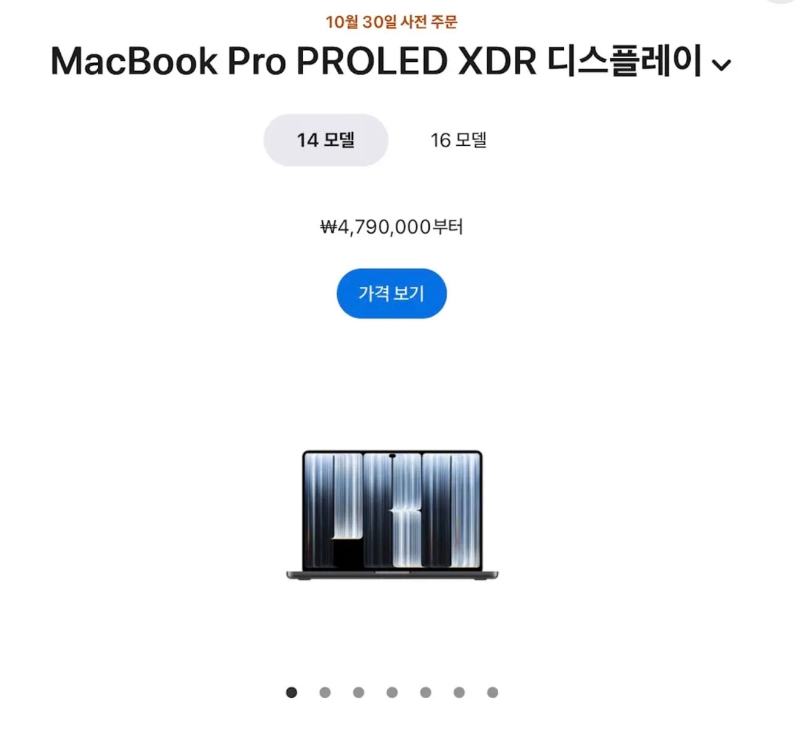
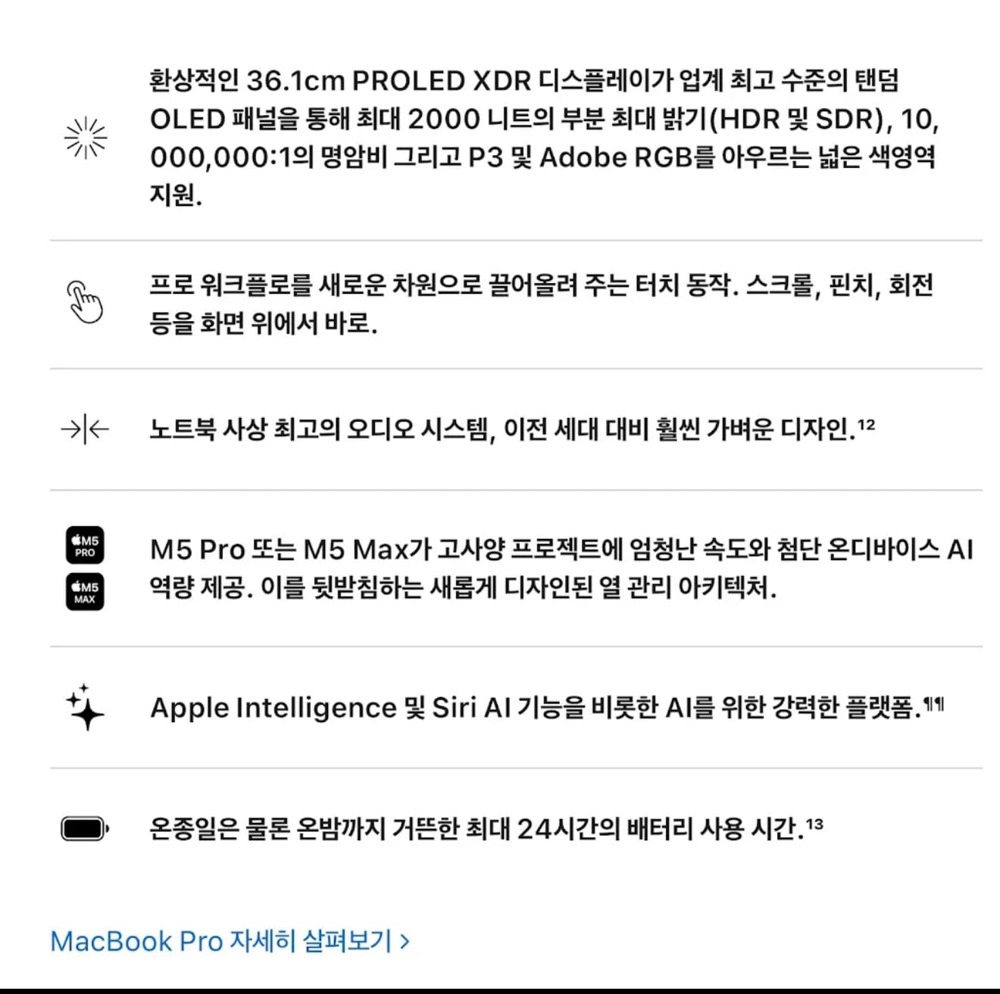
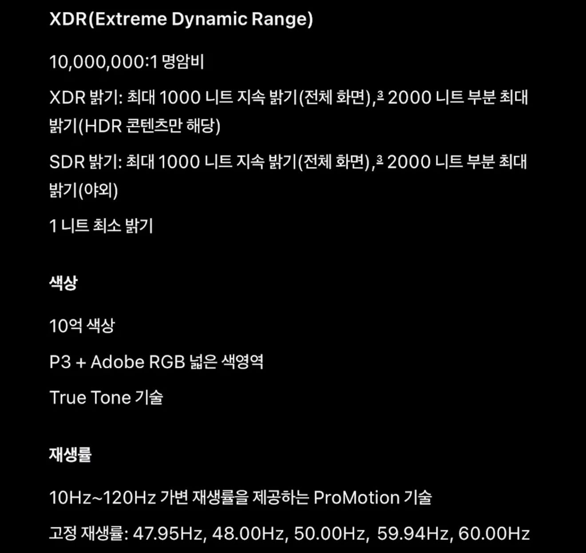
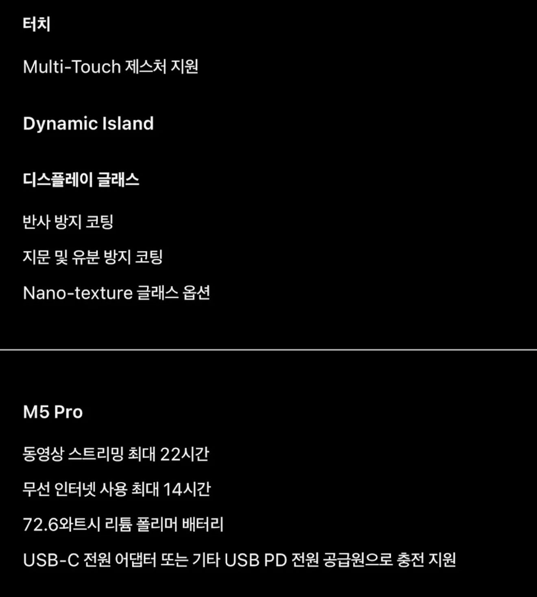
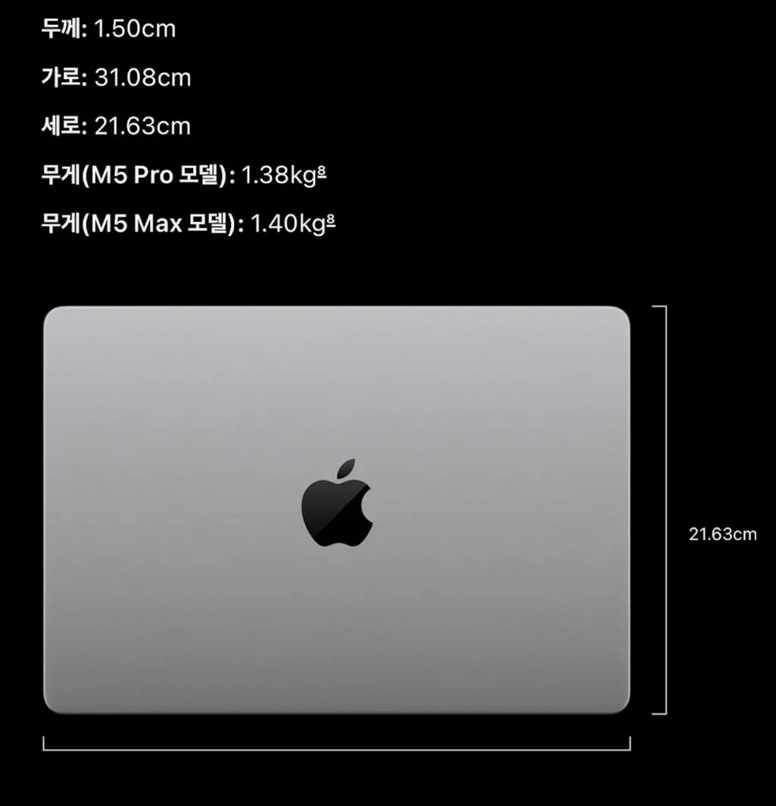
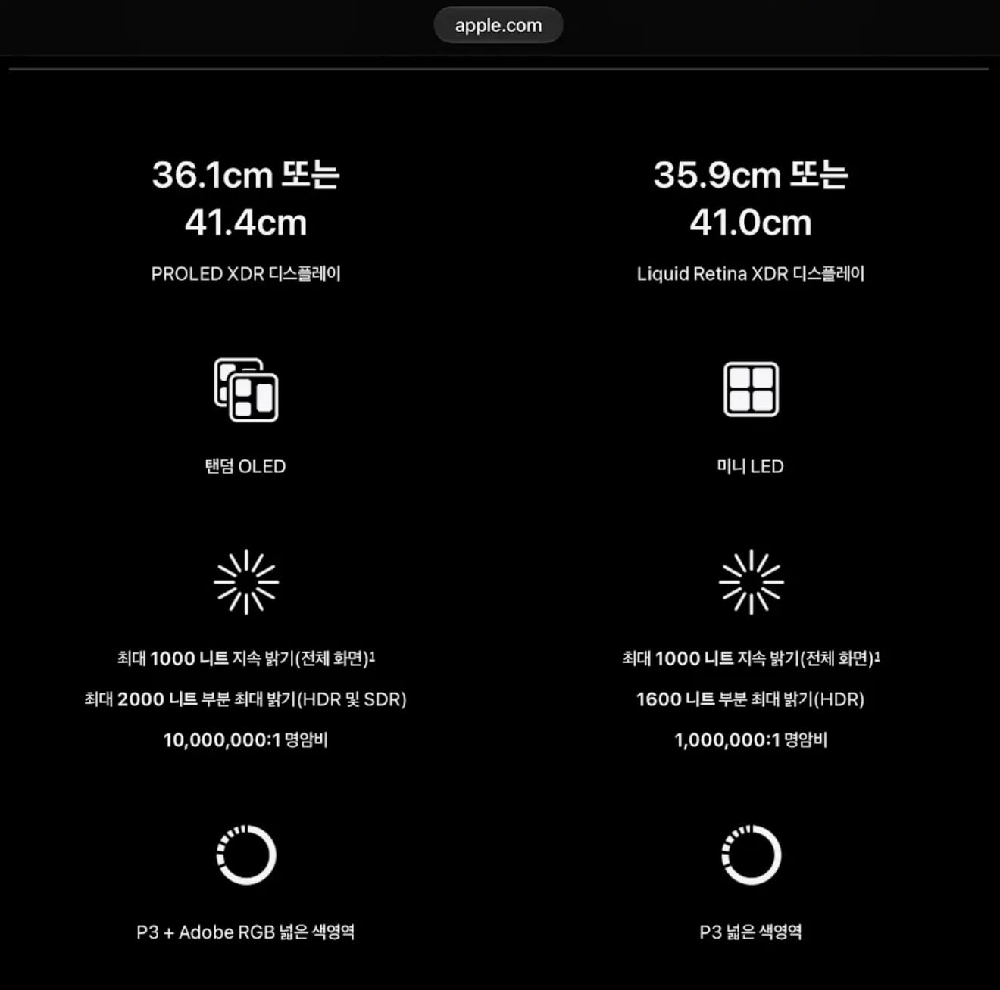
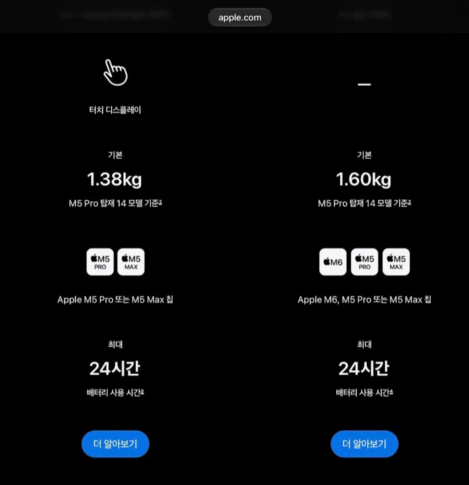

상판 사과로고에 불들어옴ㄷㄷㄷ
이건 혁신 맞지 ㅋㅋㅋ










상판 사과로고에 불들어옴ㄷㄷㄷ
이건 혁신 맞지 ㅋㅋㅋ
문제가 노트북이 얇아지면서 사과모양대로 디스플레이에 보였던게 문제라 이번에 뭐막거나한듯
옛날엔 LCD여서 가림막 떼는게 맞는데 지금은 oled라 그렇게 하면 안됨
통쾌했어요 배경화면 무료
터치스크린 맥북 나온다 전부터 얘기있더니
그냥 아이패드 프로를 맥os로 올려버리지..
이번 업데이트로 아이패드 사이드카 실행하면 터치되게하던데 이거때문이었나봄
철저하게 급나누기해서 같은 cpu 지만 ios macos로 코드실행 못하게 막아버리는데
아패프로에 맥 os 올라가면 비싼돈주고 맥북 쓰던애들이 싼맛에 아패 프로 넘어갈건데 해줄리가 없지
맞아. 다음에는 빼는게 혁신이고, 그 다음에는 다시 넣는게 혁신이고. 그 다음에는 빼는게 혁신이고...
애플 : 달달하다.
혁신 스파이럴!
와....!
고객 충성도가 중요한 이유가 있네..
& 신앙심
전엔 백라이트 불빛이었는데 이건 뭐로 하지? 그냥 led를 따로 박았나?
이런게 혁신이지
통통통쾌했어요
액정 크랙난 걸 표현하는건가 ㅋㅋㅋㅋㅋㅋ
woled 밴딩현상인줄
근데 진짜 성능 미친새기네
노트북 중에 디스플레이 좋다는 노트북이랑 맥북프로랑 놓고 보면 윈트북 갑자기 시무룩해짐
근데 요즘은 oled 노트북도 많이 나온걸로 알아서 또 어떨지 모르겠네
이유는 모르겠는데 같은 해상도일때 맥북이 글씨 가독성이 더 좋더라
혁신굿ㅋ
배경화면 보고 화면 깨진거 인줄
소름
요즘 컴터 하이앤드로 맞추면 500정도하긴하는데 ㅅㅂ
존나 사고싶다 300짜리 데탑 팔고 사고싶음
개인 컴퓨터로 먹고살았으면 샀을듯
예전에 잡스가 노트북 터치스크린은 세로 스크린 터치하는 거 자체가 인체공학적으로 끔찍하다고 그랬었는데
이번 맥북프로는 터치스크린도 달고 나오더라
잡스는 5인치대 스마트폰도 반대했음
M4 프로야 우리 2년만 더해먹자ㅎㅎ
크으.. 저걸위해 샀다고해도 인정함
디스플레이는 진짜 개깡패긴하네…
윈도우는 하이엔드 가면 다 게이밍 밖에 없던데
xps
와 첨보는 델 라인업이네… 근데 진짜 그돈씨 맥북이긴하네
430이면 그돈씨 맥북가긴할듯
14인치 깡통 479만원 쉽지않네
와 미쳤다
아이패드에 계산기 넣은 이후로 최대 혁신 아님?
샘숭 따위는 감히 엄두도 못 낼 업적이다 ㄷㄷ
아이패드에 계산기라니..! 어떻게 이런 혁신적인 발상을!?
ㅅㅂㅋㅋㅋ 까먹고 있었는데 언제 넣어줬지 검색해봤더니 2024년에 무려 출시한지 14년만에
계산기를 넣어줬네 미친새끼들 ㅋㅋㅋ
언제나 그렇듯 당연한거 넣고
생색 온몸댄스 염병 한사바리 하고
가격 씹 ㅋㅋㅋㅋ
회사돈으로 사달라해야겠네
가격 미쳤네
맥북이야 거의 5년이상까지도 쓰는거라 비싸도 사는사람 많긴해
그리고 아무노트북 쓰다가 색상틀어져서 인쇄물 날리면 맥북한대보다 비싸질수도있어서
차라리 비싼게나음
근데 진짜 대체제가 ㅈ같게 없어... 이 싯팔거.
애플의 혁신은 역시다...
저거 살라면 m5pro 24기가 램으로 사라
아니면 m6에 돈 더주고 램 달던지
이제 16기가로 작업 하는시대는 끝났다
진지하게 윈도우로 다시 갈까 생각중
저거 그냥 상판 껍데기 밑에 가림막 있던거 떼버리고 덮으면 되는거 아님? ㅋㅋㅋ